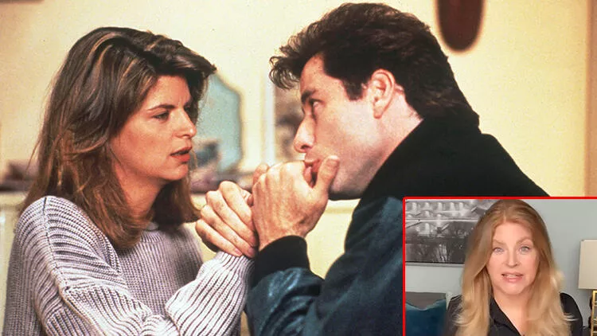
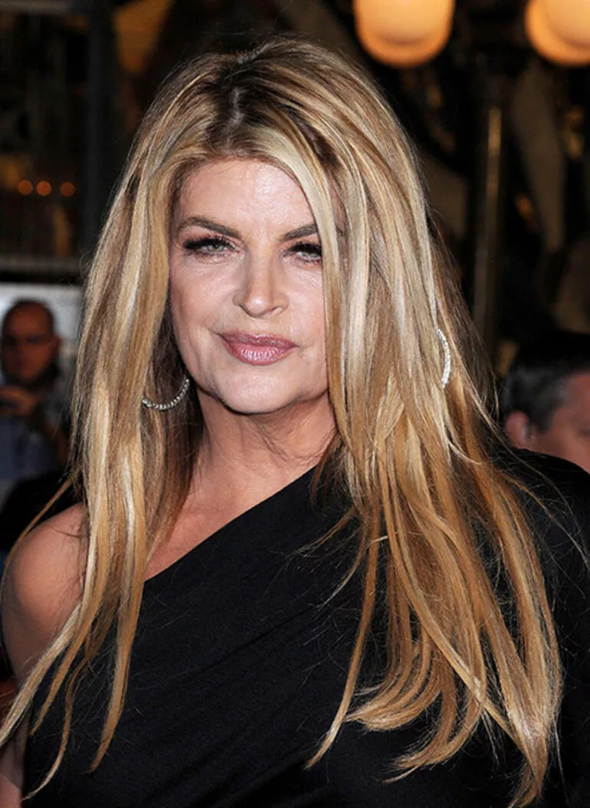
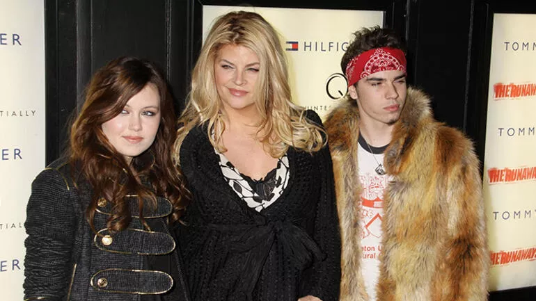
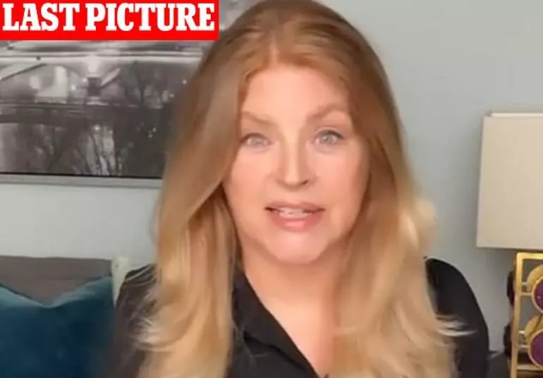

Hollywood’un en sevilen yüzlerindendi: Ünlü oyuncu Kirstie Alley 71 yaşında öldü!
Oynadığı filmler ve televizyon dizileriyle milyonların kalbine taht kuran yıldız oyuncu Kirstie Alley 71 yaşında hayatını kaybetti. Hollywood’un en sevilen oyuncularından biri olan Kirstie Alley’nin ölüm haberi çocuklarının annelerinin sosyal medya hesabından yaptığı açıklamayla duyuldu. Ailesi ünlü yıldızın kanserle verdiği kısa mücadelenin ardından hayatını kaybettiğini açıkladı.
Cheers ve Look Who's Talking (Bak Şu Konuşana) gibi yapımlardaki rolleriyle tanınan Kirstie Alley’nin çocukları 30 yaşındaki True ve 28 yaşındaki Lily sabaha karşı sosyal medyada üzücü haberi doğrulayan bir açıklama yaptılar.
KANSER SAVAŞINI KAYBETTİ
Oyuncunun kansere yakalandığı ve hastalıkla kısa süren bir savaşın ardından hayatını kaybettiği bildirildi. Çocukları ölüm haberini "İnanılmaz bir insan ve sevgi dolu bir anne olan Kirstie Alley’yi kaybettik” diyerek oyuncunun kendi sosyal medya hesabından paylaştılar.
Alley, çok sevilen uzun soluklu dizi Cheers'da bar yöneticisi Rebecca Howe'u canlandırdı; ayrıca diğer rollerin yanı sıra Look Who's Talking'de John Travolta ile birlikte rol aldı. Daha sonra devam filmleri de çekilecek olan bu seri ve John Travolta’yla oynadığı başrol onun tüm dünya tarafından tanınan ve sevilen bir yıldız olmasını sağlamıştı. Son yıllarda, bir filmde ekranda görüldüğü son yıl olan 2015'te Donald Trump'ı desteklediğini açıkladıktan sonra Hollywood tarafından dışlanmıştı. Hollywood’daki meslektaşlarından tepki aldı, ancak bir kez daha Trump'ı destekleyen açıklamalar yaptı.
BİLİNEN SON FOTOĞRAFI
Alley'nin çocukları Lillie ve William True Stevenson annelerinin en yakın aile üyeleri tarafından sevgiyle kuşatıldığını ve büyük bir güçle savaştığını belirtirken “Bizi onun hiç bitmeyen yaşama sevinci ve onu bekleyen maceraların kesinliğiyle baş başa bıraktı” dediler.

Lillie ve True “Ekranda ne kadar harika görünüyorsa gerçek hayatta
daha da harika bir anne ve büyükanneydi.” diye anlattıkları
annelerinin tedavisi sırasında görev alan Moffitt Kanser
Merkezi'ndeki ‘inanılmaz doktor ve hemşire ekibine’ gösterdikleri
bakım için minnettar olduklarını açıkladılar.
Alley, bir süredir toplum içinde hiç görülmemişti. Ünlü yıldızın son
fotoğrafı Instagram sayfasında Cameo adlı yapımda canlandırdığı
rolünü tanıtırken, eylül ayı başlarında paylaştığı fotoğraftı.
Kirstie Alley’nin hasta olduğuna dair herhangi bir görünür işaret
yoktu ve yıldız oyuncu son fotoğrafında da artık neredeyse imzası
haline gelmiş gür sarı saçlarıyla karşımıza çıkmıştı.